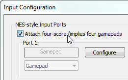

Содержание
Чтобы управление 3-го и 4-го заработало в игре, нужно дополнительно выставить одну из двух опций в окне Input Configuration.
В зависимости от игры, нужно выбрать одну из этих опций. Если ты выбрал первую опцию, а управление в игре не заработало, значит ты не угадал. Отключи ее и выбери вторую опцию.
Эти 2 опции могут конфликтовать между собой, выбирай только одну из них.
По умолчанию галочка не стоит.

По умолчанию None.